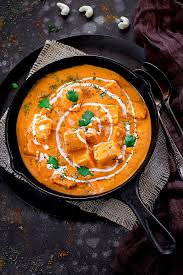

Ingredients
- 200g paneer (cubed)
- 2 tablespoons butter
- 1 onion (finely chopped)
- 2 tomatoes (pureed)
- 1 teaspoon ginger-garlic paste
- 1/2 teaspoon turmeric powder
- 1 teaspoon red chili powder
- 1 teaspoon garam masala
- 1/2 cup heavy cream
- 1 tablespoon kasuri methi (dried fenugreek leaves)
- Salt to taste
Instructions
- Heat butter in a pan and sauté onions until golden brown.
- Add ginger-garlic paste and cook for 1 minute.
- Pour in tomato puree, turmeric, chili powder, and salt. Cook until the oil separates.
- Add cream, garam masala, and kasuri methi. Mix well.
- Add paneer cubes and cook for 5 minutes.
- Serve hot with naan or rice.